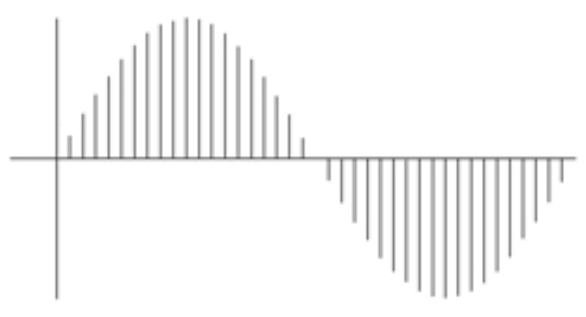
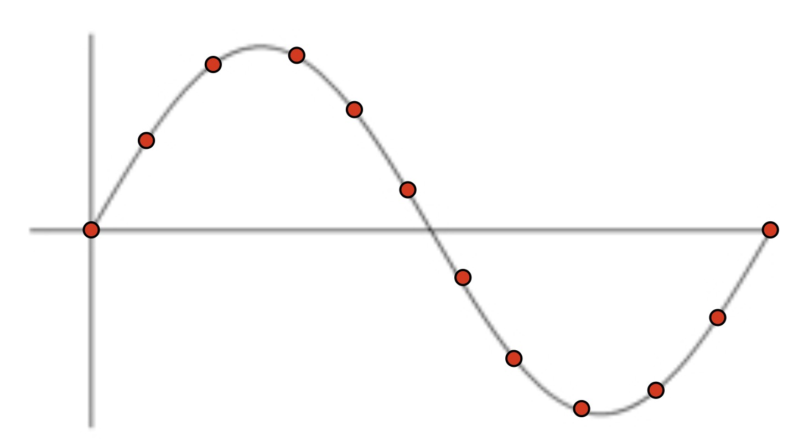
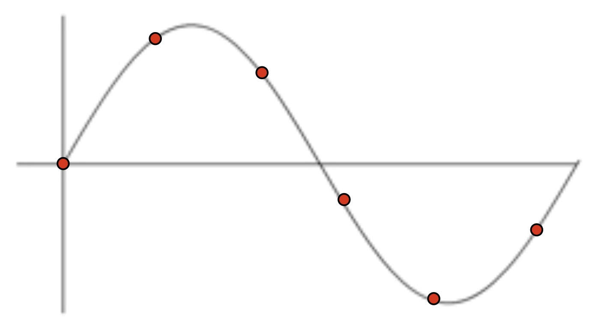
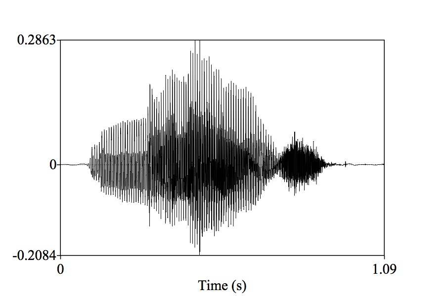
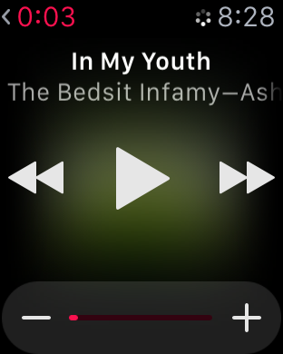

Computers and Sound
Turning Signals into features
Automatic Speech Recognition
010001110010101000100101101010101010



Sample the wave many times per second
Record the amplitude at each sample
The resulting wave will faithfully capture the signal
This is called the ‘Sampling Rate’
Measured in samples per second (Hz)




The highest frequency captured by a sample signal is one half the sampling rate
44,100 Hz
22,050 Hz
11,025 Hz
6000 Hz
44,100 Hz
6000 Hz
3000 Hz
1500 Hz
800 Hz
Radio was historically less than this
CDs are at 44,100 Hz
DVDs are at 48,000 Hz
High-End Audio DVDs are at 96,000 Hz
Some people want 192,000 Hz
Covers compression, bit depth, mp3, and more
Also LIGN 168!

We’re going to use Neural Networks
… but what are the algorithms looking at?
It’s cheap and easy
NNs weren’t amazing at estimating frequency-based effects
Important parts of the signal live only in frequency band info
We want to be able to give it all the information we can, in the most useful format!
They reflect speech-specific understanding
They reflect articulatory facts
They’re efficient
They’re very transparent
Slow to extract
Require specialized algorithms to extract
They treat speech as “special”
We’re plugging it into a black box
We’re happy to plug in hundreds of features, if need be
We’d just as soon turn that sound into a boring matrix
This is a lot of signal processing
We’re going to teach the idea, not the practice

1: Create a spectrogram
2: Extract the most useful bands for speech (in Mels)
3: Look at the frequencies of this banded signal (repeating the Fourier Transform process)
4: Simplify this into a smaller number of coefficients using DCT


Many rows (representing time during the signal)
N columns (usually 13) with coefficients which tell us the spectral shape
It’s black-boxy, but we don’t care.
We’ve created a Matrix


… Wait, hold on.
We need to give the NN labeled data
[Chunk of Sound MFCCed] == [Labeled Linguistic Info]
What level do we want to recognize at?
Sentences?
Words?
Letters?
Phones?
Diphones?
“Noise”
Handles larger patterns of coarticulation
Captures word specific effects
Robust to short duration noise
Word annotation is way cheaper
What about novel words?
Training data becomes much more sparse
Can we really learn nothing about “boy” from “soy”?
You could use the orthography itself as the ‘pronunciation dictionary’ and recognize letters (‘graphemes’)
Mapping straight from letters to speech signal
This is actually happening now!
Here’s another production system you can play with: HuggingFace2
The data are much easier to get
More able to handle new words and names
You don’t need dictionaries to map from words to phones!
Grapheme-to-phone conversion is very language specific
It’s often roughly and thoroughly arbitrary
Some languages’ writing systems have less mutual information with spoken language
It throws away data for many homograph differences (e.g. record, villa, does)

The most basic unit, so training data is rich
Can (theoretically) work for any language
Can still capture unknown words
Annotation is brutally expensive
Coarticulation is problematic
Phone-level recognition is overkill for many contexts

Coarticulation becomes a feature, not a bug
Still very basic, so all training data provides data
Can still (theoretically) work for any language
Can still capture unknown words via Fuzzy matching
Still stupidly expensive to annotate
Still overkill in many contexts
As do many others
Triphones are often a possibility
Capture sounds and annotate them as diphones or words
MFCC them, or read in the waveform alongside word labels, and feed them into a neural network as training data
Then later, feed new data in and get back a list of phones (or words), which you can use to predict which words were intended!
“For shizzle, Bashira”
“Mel Frequency Cepstral Coefficient”
“Differentiating Theta and Eth”
“Take Caminito Santa Fe, then Mira Mesa into La Jolla”


Computers can learn to do the wave
MFCCs turn beautiful sounds into opaque, useful matrices
Speech Recognition often uses diphones
You’re only as good as your dictionary
NO CLASS FRIDAY
Why is speech recognition so damned hard?